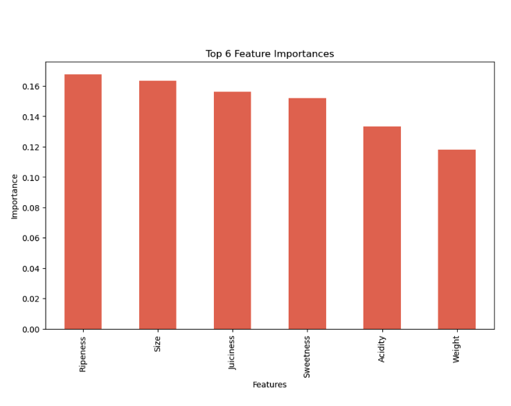
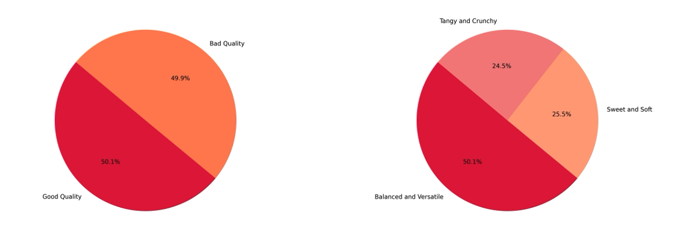

Analytical Insights into Apple Quality Assessment through Data Science
A Comprehensive Evaluation Using Python, Pandas, and Machine Learning
In the expanding field of data science, the project on apple quality assessment underscores the integration of analytical techniques and machine learning for practical applications. Employing Python's Pandas and NumPy libraries alongside visualization tools like Matplotlib and Seaborn, this project meticulously explores, cleans, and interprets data pertaining to various quality metrics of apples. Further, the use of Random Forest classifiers from Scikit-learn emphasizes predictive modeling to distinguish between good and bad quality apples. This portfolio piece elaborately discusses the methodologies, challenges, and outcomes of the project, aiming to highlight its contribution to agricultural data science.
Part 1: Data Preprocessing and Exploration
The initial phase of the project involves importing the dataset apple_quality.csv into the Python environment, which comprises several quality metrics of apples including size, weight, ripeness, and a subjective quality rating. The Pandas library facilitates data manipulation, allowing for a comprehensive statistical summary through df.describe() and identification of data types via df.info(). Significant in this phase is the attention to data cleanliness and integrity. The removal of irrelevant columns (e.g., 'A_id') and rows with missing values ensures the dataset's robustness for analysis. Moreover, the conversion of data types, particularly transforming 'Acidity' to numeric and encoding 'Quality' into a binary numerical format, reflects the meticulous data preprocessing crucial for subsequent analysis.
Part 2: Statistical Analysis and Visualization
This section delves into the statistical properties of the dataset, employing the Shapiro-Wilk test to assess the normality of the distributions of numerical features. Such a statistical test is instrumental in understanding the underlying assumptions of the data, which can influence the choice of analytical and machine learning methods. Visualization techniques serve as powerful tools for data exploration, offering intuitive insights into the dataset's characteristics. Through histograms and box-plots of attributes like size, sweetness, crunchiness, and ripeness, the project reveals significant variations and distributions within the apple quality metrics. These visualizations not only aid in identifying outliers but also in understanding the relationships between different attributes.
Part 3: Machine Learning for Quality Prediction
The cornerstone of this project is the application of the Random Forest classifier to predict the quality of apples based on measured attributes. Initially, the model is trained using all available features, followed by a refined approach focusing solely on non-invasive measures (size, weight, ripeness) that do not require damaging the apple. This strategic choice underlines the project's aim to develop practical and efficient quality assessment methods. Model performance is evaluated through accuracy metrics, providing evidence of the predictive model's effectiveness. The analysis extends to feature importance, offering insights into which attributes most significantly impact apple quality assessment. Such findings not only validate the predictive model but also guide future research and practical applications in the agricultural industry.
